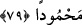
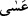

amelinin yazıldığı defterin sonuna onu kaydederler. Gündüz melekleri onu görürler,
gündüz amellerinin başına onu yazarlar. Yine sabah vaktinde karanlığın ışıkla, ölümün
kardeşi olan uykunun uyanmayla değişmesinde kudretin delilleri vardır.
79. Gecenin bir kısmında uyanarak, sana mahsus bir nâfile olmak üzere namaz
kıl. Umulur ki Rabbin seni övgüye değer bir makama ulaştırır.
“Gecenin bir kısmında uyanarak,” yâni gecenin bir kısmında kalk, uykuyu izâle et ve
at “sana mahsus bir nâfile olmak üzere namaz kıl.” “en-Nefl” kelimesi, kök olarak
fazlalık anlamındadır. Yâni, farz namazlara ek olarak ümmetin dışında, yalnızca sana
mahsus bir farz olmak üzere demektir. Nitekim Hz. Âişe (r.anhâ)’nın rivâyet ettiğine
göre Hz. Peygamber (s.a.) şöyle buyurmuştur: “Üç şey bana farz, size ise sünnettir:
Vitir namazı, misvak kullanmak ve gece namazı”[127] Ya da derecelerin fazlalaşıp
artması için ümmetin nâfilelerinden farklı olarak tatavvu, yâni nâfile olmak üzere,
demektir. Çünkü ümmetin nâfileleri günahların keffâreti ve farzlardaki hatâların telâfisi
içindir. Katâde ve Mücâhid de gece namazının ümmet için olduğu gibi Hz. Peygamber
(s.a.) hakkında da nesh edildiğini söylemişlerdir. Bu durumda âyette zikredilen şeyler
nâfile olmuştur. Çünkü Allah Teâlâ “sana mahsus bir nâfile olmak üzere” buyurmuş,
“senin üzerine” dememiştir.
“Umulur ki Rabbin seni” kabirden diriltip senin ve insanların nezdinde “övgüye
değer bir makama ulaştırır.” “ Asâ” kelimesi sözlükte ummak, arzu ve ümid
anlamındadır. Allah’tan umulan şey ise vâcib/olması zorunlu gibidir. Kâşifî: “Lâyıktır
ve elbette böylece olur.” der.
“Makâm-ı mahmûd/övgüye değer makam”, gelmiş geçmiş tüm insanların gıpta
ettikleri, mahşer ashabına şefaat etme makamıdır. Çünkü, şefaat etmesi için kendisine
başvurulan her peygamber bundan geri durur ve bunu başkasına havâle eder. Nihâyet
insanlar Muhammed (s.a.)’e gelir. O da “Evet onu ben yapacağım” der. Daha sonra o
ve diğer şefaat ehli onunla birlikte şefaat ederler. Fütûhât sâhibi der ki: “Makâm-ı
mahmûd, bütün makamların mercii ve bütün ilâhî isimlerin görünme yeridir. O, Hz.
Muhammed (s.a.)’e mahsustur. Şefaat kapısı bu makamda açılır.”
Ey zâtı iki âlemde varlığın maksûdu olan,
Senin nâmın Muhammed, makâmın mahmûddur
Bu âyet, şefaati inkâr eden Mutezile mezhebini reddetmektedir. Onlar sevâba hakkı
olmayanları buna hakkı olanlar derecesine çıkarmak olacağı ve bunun da zulüm olduğu